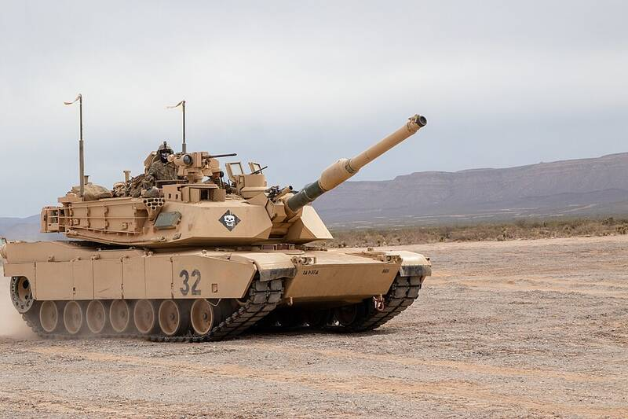

Fort Bliss
Texas

Large Army post near El Paso, adjoining the White Sands range. 1
Open in the interactive Watcher
Related
- Wernher von Braun Person
Sources
- Fort Bliss Wikipedia
Texas

Large Army post near El Paso, adjoining the White Sands range. 1
Open in the interactive Watcher